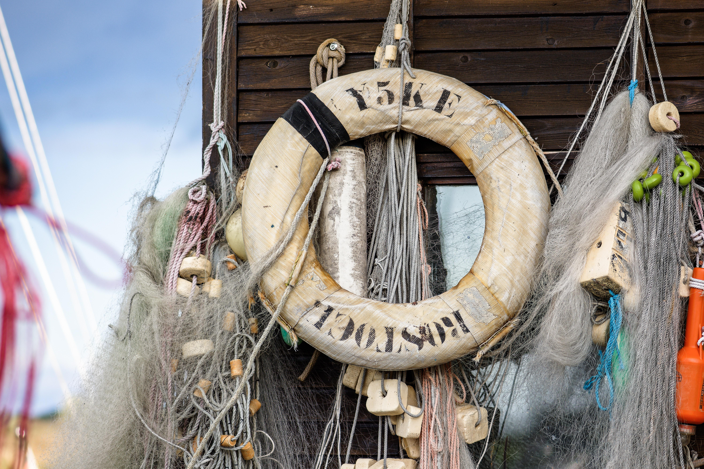
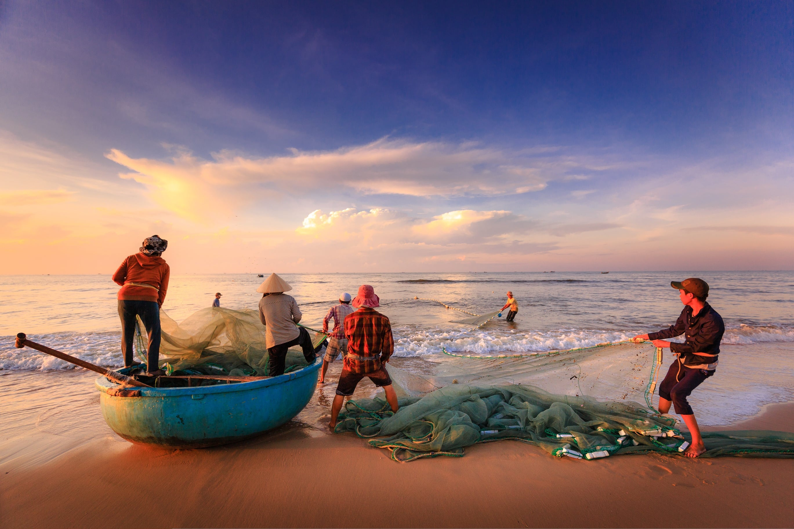

Fishing has long been one of the most popular outdoor activities around the world, offering a unique combination of relaxation, patience, and excitement. Whether standing along a quiet riverbank at sunrise or casting a line from a boat on open water, anglers often find fishing to be a peaceful escape from everyday life. Beyond recreation, fishing also connects people with nature and encourages an appreciation for aquatic environments and wildlife.
There are many different styles of fishing, each suited to specific environments and target species. Freshwater fishing in lakes and rivers commonly focuses on bass, trout, or catfish, while saltwater fishing may involve larger species such as tuna, snapper, or marlin. Anglers use a wide variety of equipment including rods, reels, bait, lures, and tackle designed to improve their chances of success. Learning how fish behave, where they feed, and how weather affects activity can greatly improve results.
Fishing is also an activity that brings people together across generations. Families and friends often share stories, techniques, and traditions while spending time outdoors. Many communities host fishing tournaments and conservation programs that promote responsible angling practices and environmental stewardship. For beginners and experienced anglers alike, fishing offers both challenge and reward, making every trip an opportunity to learn something new.

